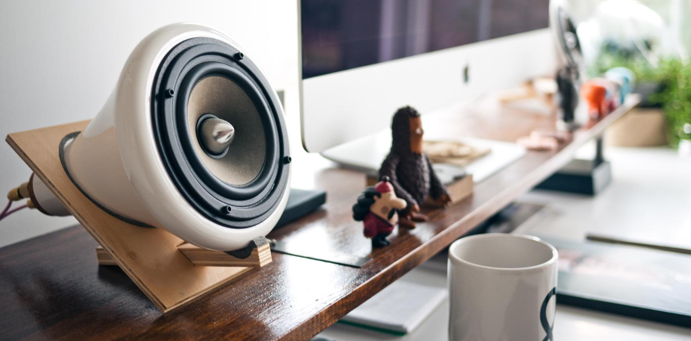

Jules Heller
Graphiste / Développeur


Qui suis-je?
De nature créative et ayant toujours été passionné par le Web, il a été tout naturel pour moi
de me diriger vers un DUT Métiers du Multimédia et de l’Internet. Ainsi, j’ai commencé cette
formation à l’IUT de Mulhouse en 2020. Après ce DUT, je compte m’orienter vers une Licence
Professionnelle Webdesign – Web Développement. Mes domaines d’action préférés sont le graphisme,
le webdesign et la programmation, mais je suis compétent dans la plupart des métiers en rapport
avec le multimédia.
Ce site Web a été entièrement designé et programmé par mes soins.
Si vous souhaitez me joindre, merci de passer par la section Contact.